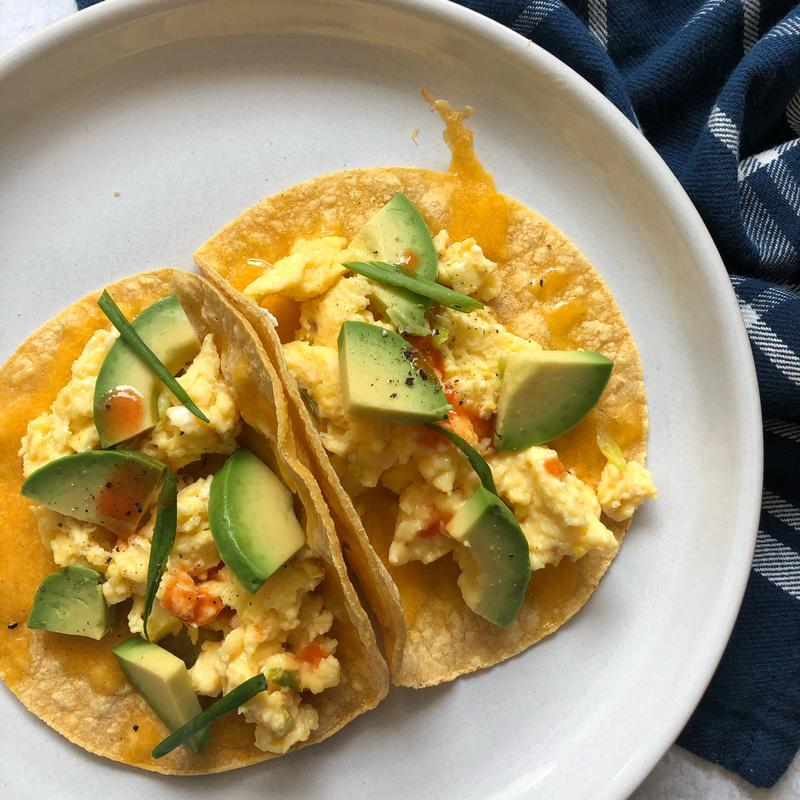

Easy Egg Tacos

Ingredients
- 2 teaspoons vegetable oil
- ½ small red or green pepper, diced
- ½ jalapeno pepper, seeded and finely diced
- 1 clove garlic, minced
- ⅔ cup diced ham
- ½ teaspoon chili powder
- 4 large eggs
- ¼ teaspoon salt
- ¼ teaspoon black pepper
- 2 teaspoons butter
- 4 small whole wheat or regular flour tortillas, warmed
- ½ cup shredded Tex-Mex or Cheddar cheese
- 2 each green onions, chopped
Toppings
- ¼ cup salsa
- 1 tablespoon chopped fresh coriander
Directions
- In medium non-stick skillet, heat oil over medium heat; saute red and jalapeno peppers and garlic for 2 minutes or until softened. Add ham and chili powder; saute 2 minutes or until heated through. Remove to bowl; cover to keep warm.
- In a small bowl or measuring cup, whisk eggs, salt and pepper.
- Melt butter in the same skillet on medium heat; add eggs and cook, stirring gently, until set but still soft, about 2 minutes.
- Spoon eggs on each tortilla, top with ham mixture, cheese and onion. Serve with salsa and/or coriander, if desired.